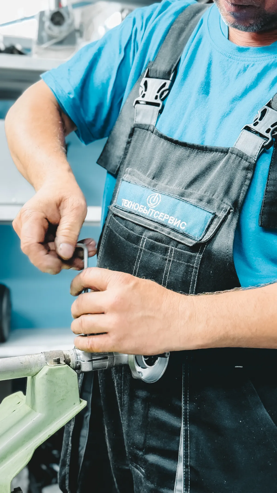
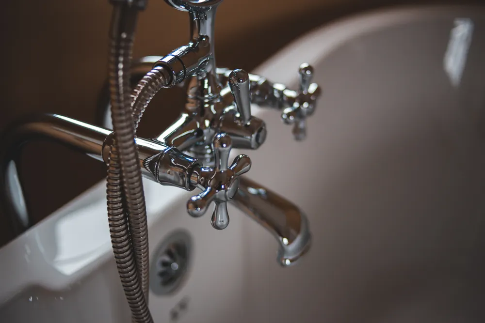
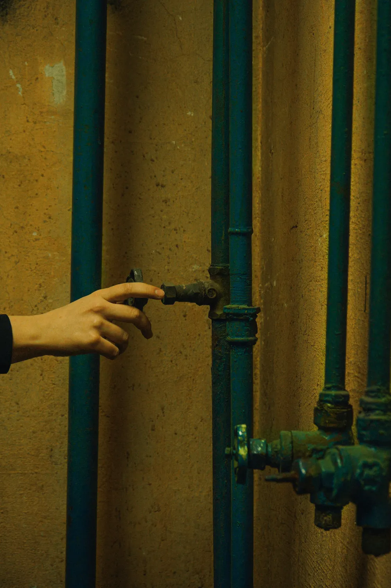
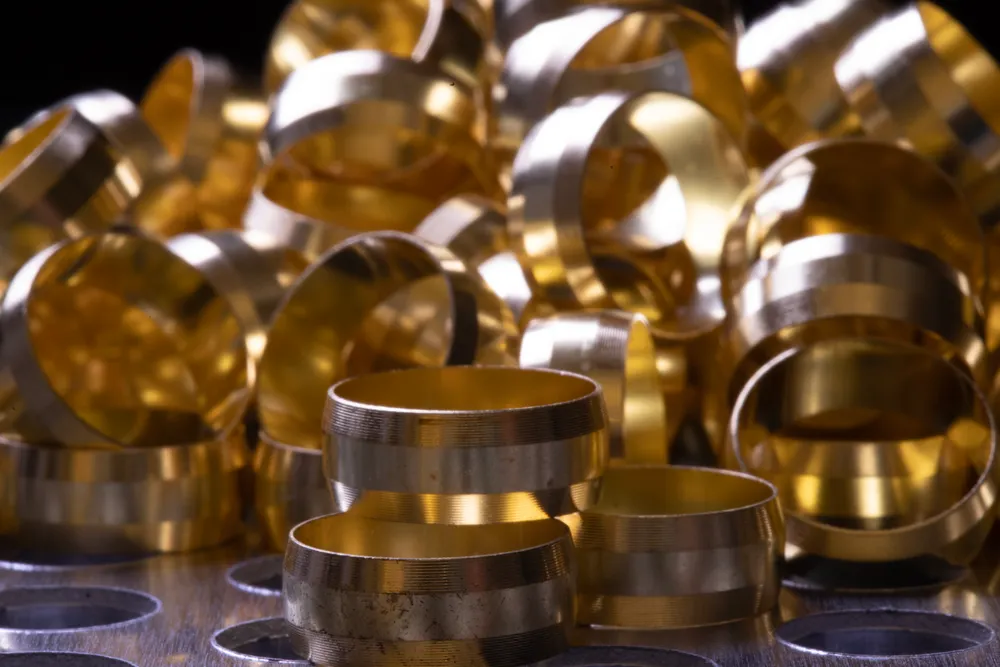

FONTANERÍA
BIEN HECHA.
Fontanería Londro. Contacta directamente para consultar tus necesidades de fontanería.
 01 / AJUSTE DE CONEXIÓNEL DETALLE MARCA LA DIFERENCIA
01 / AJUSTE DE CONEXIÓNEL DETALLE MARCA LA DIFERENCIA01 / LONDRO
PRECISIÓN EN
CADA CONEXIÓN.
Fontanería Londro es un negocio dedicado a la fontanería. Ponte en contacto para consultar tu necesidad y obtener información directamente.
02 / UNA MIRADA DE CERCA
Materiales. Uniones. Herramientas.
El lenguaje de la fontanería.
EL TRABAJO ESTÁ
EN LOS DETALLES.



Una selección visual del oficio.
Fotografías ilustrativas. No son trabajos de Londro ni un catálogo de servicios confirmados.
03 / CONTACTO DIRECTO
CUÉNTANOS
QUÉ NECESITAS.
Para cualquier consulta relacionada con fontanería, contacta directamente con Fontanería Londro.
CUADERNO VISUAL / 04
La forma.
La función.
El detalle.
Dos perspectivas de los componentes que forman parte de una instalación de agua.


Fotografías ilustrativas ajenas a Londro.